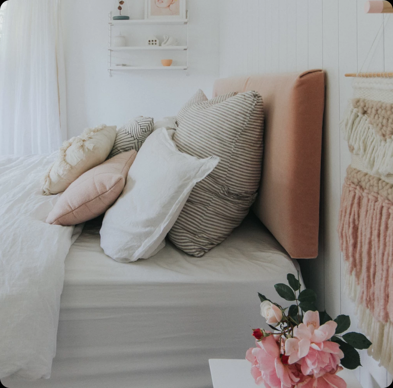
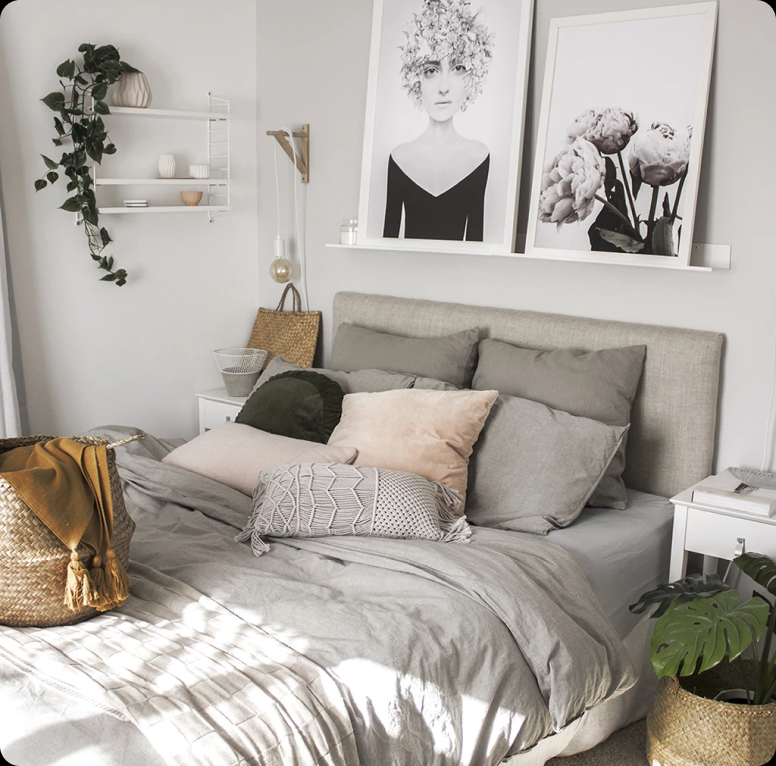

MATERIALS NEEDED:
- MDF Board - we have a queen bed so I bought a piece of MDF
from Mitre 10 and asked them to cut it
to the following size: 1.5 m wide x 0.5 m high. You could also use Plywood or any other similar material.
- Legs - I also got the team at Mitre 10 Mega to cut a couple of legs off the same piece of MDF.
These were approx 0.8 m long x 0.15 m wide.
- Foam - You want some nice thick foam to make the headboard plush. You can get foam cut to the exact
size you want at a store like Para Rubber. But I found that purchasing a foam mattress topper was the most
affordable option, which I cut to size with a stanley knife. I bought a mattress topper approx 5cm thick.
Para Rubber sell mattress toppers too, but I also found a more affordable one on Trademe. Note you can use
one that has a flat top-side with a wavy underside - just make sure the flat side is face up!
- Foam Wadding (or batting) - I purchased 2m of this off the roll at Para Rubber - it's 1.5m wide and
described as '170 gsm bonded fibre'. This gives extra softness and a more rounded appearance (perfect for
wrapping foam before upholstery).
- Fabric - Upholstery type fabric will work best - it's thicker so will sit better. I used a couple
of different fabric types for the headboards I made. First was a lovely linen from The Fabric Store. Then I
also tried velvet from Martha's Furnishing Fabrics. Both of these stores have gorgeous options in a lovely
range of colours, so I'd definitely recommend going in to choose the one that suits your room the most.
You'll need fabric that is wide enough to wrap around your headboard, plus extra to cover the buttons, so to
be safe I got 2m of the fabric length.
- Staple Gun - Ideally you would use an air powered staple gun, but I didn't have access to one, and
found that the standard staple gun I purchased from Bunnings did the job well (I just needed to push it with
both hands to get it to staple firmly into the headboard). I used the Fuller Pro Heavy Duty Staple Gun with
14mm staples.
- Buttons - You want shank buttons that you can cover in the same fabric as the headboard (they'll be
completely covered so it doesn't matter what they look like). I bought ones about 35mm wide. It pays to shop
around for these because they can get quite pricey - in the end I found a packet of 16 on Trademe for about
$12.
- Upholstery Needle - you need a long straight needle that can poke right through the headboard,
which most craft stores will have. I used one about 20 cm long.
- Thread - You need strong thread to tie on the buttons with. I used thread from the jewellery making
section at a craft store. I'm sure you could also use a strong thread from a sewing centre.
- Small needle - A plain sewing needle is required for covering the buttons.
- Hand drill - I used this to drill the button holes and to screw on the legs.
- Screws - These are to screw the legs on, you'll need 8.
- Sharp Scissors
- Sharpie or dark pencil
- Ruler
- Stanley Knife and Cutting board (if you are cutting your foam yourself)
- Hammer


A DIY upholstered headboard is a project where you create a customized headboard for a bed using fabric,
padding, and a sturdy backing material such as plywood or foam board. This involves upholstering the chosen
fabric over the backing material and padding to create a soft and padded surface for leaning against while
sitting up in bed. The process typically includes measuring and cutting the materials to size, attaching the
fabric securely to the backing, and then mounting the finished headboard to the bed frame or wall. This DIY
project allows for creativity and personalization in terms of fabric choice, shape, and size, providing a
stylish and comfortable focal point for the bedroom.
Step 1:
The first step is to drill holes in the board for the buttons (which we will put in at the end). Measure out
evenly where you would like them to go, depending on how many you want. I did two rows of 4, and I placed them
a bit closer to the top than the bottom (I find when the headboard sits on the bed the pillows etc cover the
bottom of the headboard so the buttons are more visible placed a bit higher). The holes just need to be big
enough to thread the upholstery needle through.
Step 2:
Then lay the wadding flat on the floor, place the foam in the centre, and lay the board directly on top of the
foam. You can spray glue the foam to the board here, but I didn't find it necessary. Cut the wadding so it
overlaps about 15cm.
Now we staple the foam and wadding to the board. If your foam isn't cut to size, use a stanley knife to cut
the foam so that it is the same size as the board.
Now wrap the wadding up around the other two layers and staple it to the board. Start by stapling along each
side, stopping about 10cm from each.
For the corners, the idea is to fold the wadding in by making lots of small folds and stapling those down
(this creates a smoother look than a big fold). Here's a video I made, plus I found the second video below
really helpful to learn the technique. When you're done, cut away any excess wadding around the corners (leave
a couple of centimetres so the staples can still hold).
Step 3:
Time to staple the fabric to the board. Lay the foam and board in the centre of your fabric (make sure the
fabric is right side down). Wrap the fabric firmly up around the board and staple along the sides, once again
leaving the corners. Pull the fabric firmly up but don't stretch it out of shape or you'll get more creases.
We use a different technique with the corners than we did for the wadding, because this time we do want a nice
tidy fold. I watched a bunch of videos on Youtube to perfect the technique. You'll see a video I made of the
technique below, plus I've linked in the one I found most helpful online (sometimes it helps to see a couple
of different ones!).Repeat for all four corners. Make sure you fold both top corners in the same direction
(i.e. so they have folds which mirror each other).
Step 4:
Now it's time to cover the buttons in the same fabric as the headboard, which will give a professional look. I
did this by hand, but you can get button covering kits at sewing and craft stores - they don't tend to work
well with thick upholstery fabric though.
So here is the hand sewing technique, which is still super easy:
- Cut out round circles of fabric, big enough to fold up around the button with a bit of a border.
- Hand sew around the edge of the fabric circle
- Place the button in the middle and pull the fabric tight so that it overlaps around the button.
- Knot off the thread. If you have any bits which haven't pulled in tight then go around once more, tighten
and tie if off.
Step 5:
Next up, we will tie the buttons on to the headboard. There are various ways you can do this (like with wire
tied to another button on the reverse side), but I found this technique the easiest and cheapest:
- Position the headboard upright by leaning it on something.
- Grab your upholstery needle, thread it with a long length of thread, and push it through from the back to
the front of a button hole. Try to thread it as straight as possible (it helps if you look at the headboard
side on), and make sure there is a big tail of thread left on the back side (it's such a pain if you lose
the thread during this process!).
- Now thread the button on and poke the needle back through the same hole (front to back this time). This
can be tricky to get it back through, because you have to feel for the hole again.
Here are some tips:
- Try to position yourself on the same angle as when you pushed the needle through back to front.
- Again, try to keep it as straight as possible.
- Feel around until it finds the hole.
- If you are really struggling, start again (sometimes it's easier on the second go).
- If you still can't find the hole, take the needle off and thread it back to
front again but don't pull
it all the way through. Then carefully tape the thread to the pointy end and pull the needle back through.
This is a last resort because the thread is tricky to secure to the pointed end without coming off as you
push it through, but it can work if you are desperate!
- Tie off the thread on the back, so that the button is hanging off the front side. Now lay your headboard
face down and pull the button tight to created that tufted look (have a look at the underside to check
you're happy), then staple the thread against the board. My staple gun didn't get a tight hold, so I pulled
it tight and hammered the staple in. Then reverse direction and do the same again.
- Repeat with all your buttons.
Step 6:
Lastly we need to add the legs to the headboard. I measured how far up the wall I
wanted the headboard to
sit, and this gave me the figure of how long the legs needed to be. Then I lay the headboard face side down
and measured out where the legs needed to go on the back side. Make sure the legs are sitting evenly from each
side and the bottom, so that your headboard will sit straight when you put it behind the bed. I found tracing
around them a good way to keep track.
Then choose where you'll screw them on, and mark the holes on the legs and headboard. I did four screws per
leg. Drill the pilot holes, being careful you don't drill right through the fabric (I found it fine, just make
sure to stop drilling as soon as you feel the drill bit go through the MDF). Lastly screw the legs on, and
you're all done! Your headboard is ready to put behind your bed as a statement piece in your bedroom.